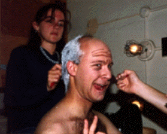
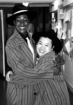
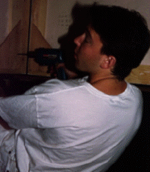
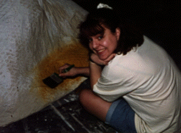
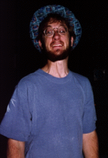
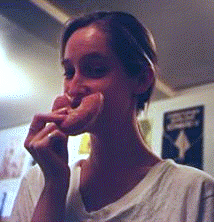
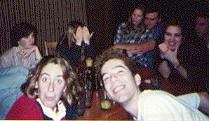

Below, the cast of Guys and Dolls frolics on the Downtown set, one of four major sets built for the show. We purchased a new drop, seen in the background, which was painted to allow light to come through in some areas. When backlit, the lights of the city appeared to glow. The effect was accompanied by chaser lights on the folding flats stage left and right. The folding flats were also rigged to fly, allowing minimal use of blackouts.
To the right, the Gamblers recline in-between crap shoots.
Clockwise from lower right: John Bagdanoff '95, Su-Ting Fu '94, Adrian Khactu '95, Joanna Dickler '97, Paco Farias '94, Ramon Torres '97, Atim Udoffia '95, Charlie Rosene '94.

Hey! Who let that photographer in here! No pictures!
To the left, actor Dan Goldman '94 ages 50 years in a single sitting at the hands of expert makeup artists Jody Woods '97 and Hilda Saffari '97.

On the right, Harry the Horse (Adrian Khactu '95) gives Big Julie (Atim Udoffia '95) a Big Hug.
Adrian and Atim later went on to staff positions in Ram's Head, as Director and Co-Choreographer respectively for Big Game Gaieties '94: Natural Born Gaieties.
Ram's Head encourages people of all backgrounds to audition and apply for positions on our production staffs. We often cast non-traditionally with respect to both race and sex. Like they say, "If you gots the talent, you gots the part!"

 Director Dave Barlin '95 trying his hand at power tools. Does he know what he's doing?
Our biggest build time for Spring Show is usually during Spring Break, when everyone in the staff (yes, even bigshots like Dave) hangs around campus to screw.

Assistant Stage Manager Marnie Berringer '97 painting sand beneath a papier maché palm tree. Ah, c'est la vie.
Ram's Head offers tremendous opportunities for students to become involved either in the technical or performing side of theatre, regardless of seniority. Marnie was just a frosh when she ASM'd Guys and Dolls in '94.
The following season, she TD'd Gaieties '94, and also served on the Executive Staff as
Box Office Manager.
 Following in the great Method footsteps of Marlon Brando, Robert DeNiro, and Dustin Hoffman, actor Jeff Meador '95 underwent a gruesome physical and psychological transformation to become Nicely-Nicely Johnson. Here we see him at his most frightening.
Many Ram's Hedons are active both onstage and backstage. Jeff's first show with us was as propsmaster for Gaieties '91. He then appeared in Little Shop of Horrors, Gaieties '92, and Guys and Dolls before returning backstage as Ram's Head's Executive Producer for the '94-'95 season.

Anna Bonner '95 smiles for the camera. Donuts are a must at every build.

 In the foreground, Ali Whitman '97 and Ramon Torres '97 make goony-faces at the photographer. They are pictured here stone sober.
Also pictured: Joanna Dickler '97, Alison Duxbury '95, Ingrid Hoffman '95,
John Chakan '97, Amanda Morgan '95, and Dave Barlin '95.